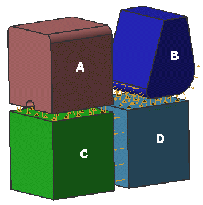

Surface-to-surface contact and glue both use surface pairs to define where contact or glue occurs.
Manual Pairing — You specifically select the source and target faces for pairing.
Automatic Pairing — You select some or all of the faces and the software pairs them automatically using the Distance Tolerance.
The part in the image consists of four solid bodies. Create Automatic Face Pairs has identified seven face pairs for defining surface-to-surface contact:
Three face pairs between blocks A and C.
One face pair between blocks C and D.
Three face pairs between blocks D and B.
